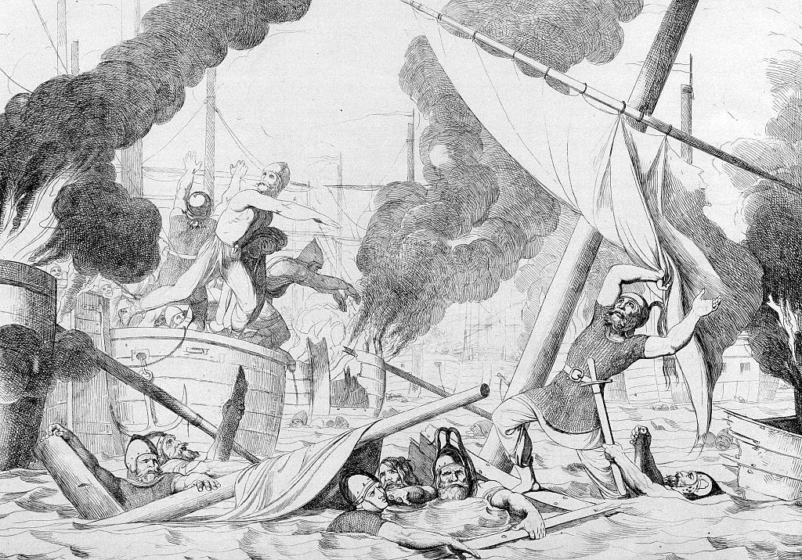
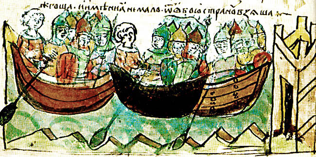
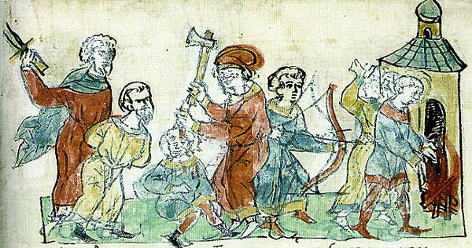
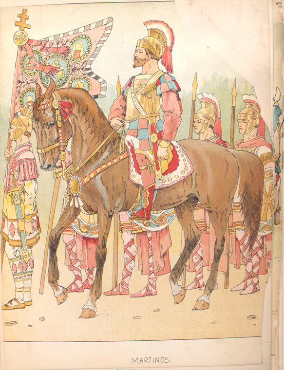
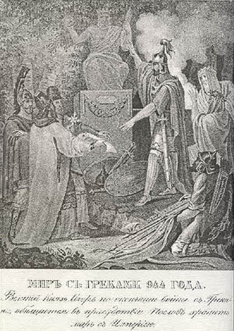

Русско-византийская война 941—944 годов— неудачный поход князя Игоря на Византию в 941 и повторный
поход в 943, закончившийся мирным договором в 944.
11 июня 941 флот Игоря был рассеян у входа в Босфор византийской эскадрой, применившей греческий огонь, после чего боевые действия продолжались ещё 3 месяца на черноморском побережье Малой Азии. 15 сентября 941 русский флот был окончательно разгромлен у берегов Фракии при попытке прорваться на Русь. В 943 князь Игорь собрал новое войско с участием печенегов и повёл в поход на Дунай к северным границам Византийской империи. До военных столкновений дело на этот раз не дошло, Византия заключила мирный договор с Игорем, выплатив дань.
Кембриджский документ (письмо хазарского еврея 2-й половины X века) связывает поход Руси на Константинополь с событиями, имевшими место в Хазарии незадолго до этого. В 930-е года византийский император Роман начал кампанию против иудеев. В ответ хазарский царь, исповедующий иудаизм, ниспроверг множество необрезанных. Тогда Роман с помощью даров уговорил некого Хальгу, названного царём Русии, совершить набег на хазар.
Хальга захватил Самкерц (возле Керченского пролива), после чего против него и Византии выступил хазарский военачальник Песах, который разорил три византийских города и осадил Херсонес в Крыму. Затем Песах атаковал Хальгу, отбил добычу того из Самкерца и с позиции победителя вступил в переговоры. Хальга был вынужден согласиться на требование Песаха начать войну с Византией.

Действие греческого огня при осаждении Константинополя Игорем. Гравюра Ф. А. Бруни, 1839.
Дальнейшее развитие событий в Кембриджском документе в целом совпадает с описанием похода князя Игоря на Византию, известного по византийским и древнерусским источникам, но с неожиданной концовкой:
И пошел тот против воли и воевал против Кустантины [Константинополя] на море четыре месяца. И пали там богатыри его, потому что македоняне осилили [его] огнём. И бежал он, и постыдился вернуться в свою страну, а пошел морем в Персию, и пал там он и весь стан его. Тогда стали Русы подчинены власти казар.
Были попытки отождествить Хальгу с Олегом Вещим (С. Шехтер и П. К. Коковцов, позже Д. И. Иловайский и М. C.Грушевский) или самим Игорем (Helgi Inger, «Олег Младший» Ю. Д. Бруцкуса). Подобные отождествления, однако, приводили кпротиворечию со всеми остальными достоверными источниками по походу 941 года. По Кембриджскому документу Русь попала в зависимость от Хазарии, однако древнерусские летописи и византийские авторы даже не упоминают хазар при описании событий.[2][3]
Н. Я. Половой предлагает следующую реконструкцию событий: Хальга был одним из воевод Игоря. Пока он сражался с Песахом, Игорь решил помириться с хазарами, отозвал Хальгу из Тмутаракани и двинулся походом на Константинополь. Именно поэтому Хальга так крепко держит данное Песаху слово воевать с Романом. Часть русского войска с воеводой Хальгой прошла на кораблях мимо Херсонеса, а другая часть с Игорем вдоль побережья Болгарии. Из обоих мест в Константинополь пришли вести о приближающемся неприятеле, поэтому Игорю не удалось застать город врасплох, как это произошло при первом набеге русов в 860 году.
Первый поход Игоря. 941 год
Источники по походу 941 года
Набег на Константинополь в 941 году и последующие события того же года отражены в византийских Хронике Амартола (заимствовано в Продолжателе Феофана) и Житие Василия Нового, а также в историческом труде Лиутпранда Кремонского (Книга воздаяния, 5.XV). Сообщения древнерусских летописей (XI—XII вв.) основываются в целом на византийских источниках с добавлением отдельных деталей, сохранившихся в русских преданиях.
Поражение у Иерона
Продолжатель Феофана так начинает рассказ о набеге:

Поход Игоря. Иллюстрация из Радзивилловской летописи
"Одиннадцатого июня четырнадцатого индикта (941 г.) на десяти тысячах судов приплыли к Константинополю росы, коих именуют также дромитами, происходят же они из племени франков. Против них со всеми дромонами и триерами, которые только оказались в городе, был отправлен патрикий [Феофан]. Он снарядил и привел в порядок флот, укрепил себя постом и слезами и приготовился сражаться с росами."
Набег не стал неожиданностью для Византии. Весть о нём заранее послали болгары и позднее стратиг Херсона. Однако византийский флот сражался с арабами и защищал острова в Средиземном море, так что, по словам Лиутпранда, в столице оставалось всего 15 полуразрушенных хеландий (тип судна), оставленных из-за их ветхости. Количество кораблей Игоря византийцы исчислили в невероятные 10 тысяч. Лиутпранд Кремонский, передавая рассказ очевидца, своего отчима, назвал тысячу кораблей во флоте Игоря.[4] По Повести временных лет и свидетельству Лиутпранда, русы вначале бросились грабить малоазиатское побережье Чёрного моря, так что защитники Константинополя имели время, чтобы подготовить отпор и встретить флот Игоря в море у входа в Босфор, недалеко от города Иерон.
Наиболее подробный рассказ о первой морской битве оставил Лиутпранд:
"Роман [византийский император] велел прийти к нему кораблестроителям и сказал им: Сейчас же отправляйтесь и немедленно оснастите те хеландии, что остались [дома]. Но разместите устройство для метания огня не только на носу, но также на корме и по обоим бортам. Итак, когда хеландии были оснащены согласно его приказу, он посадил в них опытнейших мужей и велел им идти навстречу королю Игорю. Они отчалили; увидев их в море, король Игорь приказал своему войску взять их живьем и не убивать. Но добрый и милосердный Господь, желая не только защитить тех, кто почитает Его, поклоняется Ему, молится Ему, но и почтить их победой, укротил ветры, успокоив тем самым море; ведь иначе грекам сложно было бы метать огонь. Итак, заняв позицию в середине русского [войска], они [начали] бросать огонь во все стороны. Русы, увидев это, сразу стали бросаться с судов в море, предпочитая лучше утонуть в волнах, нежели сгореть в огне. Одни, отягощённые кольчугами и шлемами, сразу пошли на дно морское, и их более не видели, а другие, поплыв, даже в воде продолжали гореть; никто не спасся в тот день, если не сумел бежать к берегу. Ведь корабли русов из-за своего малого размера плавают и на мелководье, чего не могут греческие хеландии из-за своей глубокой осадки."
Амартол добавляет, что разгром Игоря после атаки огненосных хеландий довершила флотилия боевых византийских кораблей: дромонов и триер. Считается, что русские 11 июня 941 года в первый раз столкнулись с греческим огнём, и память об этом надолго сохранилась среди русских воинов. Древнерусский летописец начала XII века так передал их слова: Будто молнию небесную имеют у себя греки и, пуская её, пожгли нас; оттого и не одолели их. Согласно ПВЛ, русские вначале потерпели поражение от греков на суше, только потом произошёл жестокий разгром в море, но, вероятно, летописец свёл воедино сражения, произошедшие в разное время в разных местах.
Согласно ПВЛ и Лиутпранду, на этом война закончилась: Игорь вернулся с уцелевшими воинами домой (по Льву Диакону, у него осталось едва ли 10 кораблей). Император Роман повелел казнить всех пленных русов.
Боевые действия в Малой Азии
Византийские источники (Хроника Амартола и Житие Василия Нового) описывают продолжение похода 941 года в Малой Азии, куда отступила часть русского войска после разгрома под Иероном. По Продолжателю Феофана, боевые действия на южном побережье Чёрного моря развивались следующим образом:
"Уцелевшие поплыли к восточному берегу, к (вифинской местности)[5] Сгоре. И послан был тогда по суше им наперехват из стратигов патрикий Варда Фока с всадниками и отборными воинами. Росы отправили было в Вифинию изрядный отряд, чтобы запастись провиантом и всем необходимым, но Варда Фока этот отряд настиг, разбил наголову, обратил в бегство и убил его воинов. Пришел туда во главе всего восточного войска и умнейший доместик схол Иоанн Куркуас, который, появляясь то там, то здесь, немало убил оторвавшихся от своих врагов, и отступили росы в страхе перед его натиском, не осмеливались больше покидать свои суда и совершать вылазки.

Расправа воинов Игоря над греками. Иллюстрация из Радзивилловской летописи.
Много злодеяний совершили росы до подхода ромейского[6] войска: предали огню побережье Стена (Босфора), а из пленных одних распинали на кресте, других вколачивали в землю, третьих ставили мишенями и расстреливали из луков. Пленным же из священнического сословия они связали за спиной руки и вгоняли им в голову железные гвозди. Немало они сожгли и святых храмов. Однако надвигалась зима, у росов кончалось продовольствие, они боялись наступающего войска доместика схол Куркуаса, его разума и смекалки, не меньше опасались и морских сражений и искусных маневров патрикия Феофана и потому решили вернуться домой. Стараясь пройти незаметно для флота, они в сентябре пятнадцатого индикта (941 г.) ночью пустились в плавание к фракийскому берегу, но были встречены упомянутым патрикием Феофаном и не сумели укрыться от его неусыпной и доблестной души. Тотчас же завязывается второе сражение, и множество кораблей пустил на дно, и многих росов убил упомянутый муж. Лишь немногим удалось спастись на своих судах, подойти к побережью Килы (Фракия) и бежать с наступлением ночи."

Расправа воинов Игоря над греками. Иллюстрация из Радзивилловской летописи.
Таким образом в течение всего лета 941 русские войска грабили малоазиатское побережье Чёрного моря, пока не подошли основные силы византийской армии. ПВЛ сообщает о 40 тысячах воинов в восточной армии доместика Куркуаса помимо отрядов Варды Фоки (из Македонии) и стратилата Федора (из Фракии). Боевые действия велись русами набегами с ладей, которые были недоступны для византийских боевых кораблей на малоазиатском мелководье. При попытке прорваться на Русь, предпринятой вечером 15 сентября 941, флот русов был обнаружен в море и уничтожен возле города Килы (Κοιλία) близ входа в Босфор. Судьба русского войска после второго разгрома на море осталась неизвестной. Вряд ли многим удалось вернуться на Русь, так как русские летописи умалчивают о таком развитии событий.
Древнерусские источники так перестраивали повествование, чтобы все боевые действия оканчивались на первом и единственном морском поражении. Этот факт историк Н. Я. Половой объясняет тем, что после поражения у Иерона русское войско разделилось. Часть войска с Игорем вернулась на Русь, в русских летописях оказалась отражена только их судьба, однако большая часть флота спаслась на мелководье у побережья Малой Азии, куда греческие корабли не могли подобраться из-за глубокой осадки. В качестве начальника оставшейся в Малой Азии части русского войска Н. Я. Половой рассматривает известного по вышеупомянутому хазарскому источнику Хальгу, который воевал с Византией 4 месяца. Также 4 месяца, с июня по сентябрь 941, продолжались боевые действия по Амартолу.
Историк Г. Г. Литаврин предполагает, что русы также по мелководью проникли в Босфор и Мраморное море и полностью господствовали там, что привело к разрыву сообщения между европейским и азиатским берегами.[7]
Второй поход Игоря. 943 год
Все сведения о 2-м походе Игоря и последующем мирном договоре содержатся только в русских летописях.
ПВЛ относит поход к 944 году: В год 6452. Игорь же собрал воинов многих: варягов, русь, и полян, и словен, и кривичей, и тиверцев, — и нанял печенегов, и заложников у них взял, — и пошел на греков в ладьях и на конях, стремясь отомстить за себя.
Византийский император был предупреждён о нападении и направил навстречу русам и печенегам послов. Переговоры состоялись где-то на Дунае. Игорь согласился взять богатую дань и вернулся в Киев, отправив своих союзников печенегов воевать против болгар. На решение повлиял недавний разгром на море, дружинники на совете так высказались: Разве знает кто — кому одолеть: нам ли, им ли? Или с морем кто в союзе? Не по земле ведь ходим, но по глубине морской: всем общая смерть.
Историки датируют поход 943 годом (Н. М. Карамзин, Б. А. Рыбаков, Н. Я. Половой). Новгородская Первая летопись младшего извода, которая содержит фрагменты летописи XI века, ошибочно датирует поход Игоря 920 годом и сообщает о повторном походе через год, что соответствует 943 году по более точной византийской хронологии. Продолжатель Феофана под этим же годом упоминает о большом походе «турков», который завершился мирным договором с Византией. Под «турками» греки обычно подразумевали венгров, начавших совершать набеги на Византию с 934 года, и не исключено, что древнерусский летописец спутал венгров с печенегами. По крайней мере Продолжатель Феофана сообщает о том, что после договора с «турками» в 943 мир сохранялся 5 лет.
Русско-византийский договор. 944 год

Борис Чориков. Мир с грекам. 944 год.
На следующий год после похода Игоря император Роман прислал послов к Игорю восстановить мир. ПВЛ датирует мирный договор 945 годом, но упоминание в договоре имени Романа указывает на 944 год. В декабре 944 Роман был свергнут сыновьями, Стефаном и Константином, которых тут же от власти отстранил новый император Константин Багрянородный.
Текст русско-византийского договора, имеющего военно-торговый характер, полностью процитирован в ПВЛ. Прежде всего он регулирует условия пребывания и торговли русских купцов в Византии, определяет точные суммы денежных штрафов за различные проступки, устанавливает суммы выкупа за пленников. Также там сформулировано положение о военной взаимопомощи между русским великим князем и византийскими царями.
Через год после заключения договора великий князь Игорь был убит древлянами.
См. также
Русь (народ)
Русско-византийские войны
Каспийские походы русов
Литература
Половой Н. Я. К вопросу о первом походе Игоря против Византии (сравнительный анализ русских и византийских источников) // Византийский временник, том XVIII, 1961 г., стр. 85-104.
Половой Н. Я. Две ошибки древнейшего русского хрониста
Семенов И. Г. К интерпретации сообщения «Кембриджского Анонима» о походах Хельгу, царя Русии // Хазары. Второй международный коллоквиум. Тезисы. М., 2002.
Тексты первоисточников
Продолжатель Феофана, Царствование Романа, VI.39
Повесть временных лет в переводе Д. С. Лихачева (см. 941—944 годы).
Лиутпранд Кремонский: Воздаяние, книга V (см. главу XV)